Demo video
Onboard autonomy stack
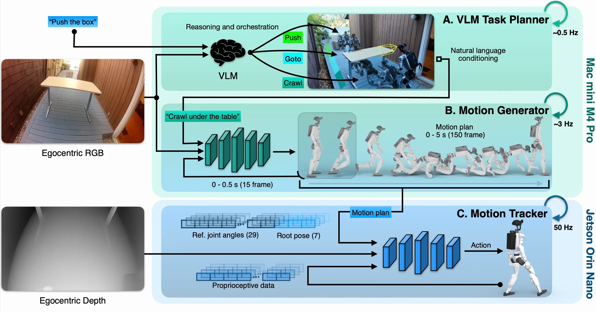
Animated timeline of the onboard stack; time flows right to left past the present. About every 2 s the orchestrator picks the next subtask; every third of a second the generator replans 5 s of whole-body motion, 150 frames of 36 values, whose first 0.5 s is committed; the tracker follows it at 50 Hz.

Spoken requests, one after another: “Push box away”, “Follow me”, “Sit inside”.

- Orchestrator, off-the-shelf VLM, about every 2 s, on the backpack compute unit: turns the operator's requests into subtasks (crouch under the table, push the box, follow the person, go through the door, go to the chair, sit); advances on success, retries on failure. The requests and subtasks are the run's own log, aligned to the video.
- Generator, about 3 Hz, on the backpack compute unit: from the RGB image and the current subtask, a 5 s whole-body plan, 150 frames of 36 values; frozen Qwen3.5-2B encoder with a DiT decoder, flow matching, 15 Euler steps. The first 0.5 s (15 frames) is committed and fed back as clean tokens.
- Tracker, 50 Hz, on the embedded compute unit: follows the plan with onboard depth and proprioception and outputs joint targets for 29 joints.
- Executed
- Plan
- Committed
Gallery
Siton a chair Doorsidestep through Crouchunder a table Pusha box Crouchunder a desk Crouchunder a desk Followa person Siton a sofa Crawlunder a desk Go-Toa person Go-Toa person Crawlunder a table Doorsidestep through Followafter standing up Crouchunder a table Crouchunder a desk Siton a chair Crouchunder a desk Pusha box Doorsidestep through Go-Tothe trash bin Crawloutdoors Pusha box Crawlunder a table Siton a chair Siton a sofa Go-Toa person Crawlunder a desk Pusha box Doorsidestep through
Simulation Results
Drag or use the arrow keys to orbit. Plus and minus zoom. Home resets the camera.
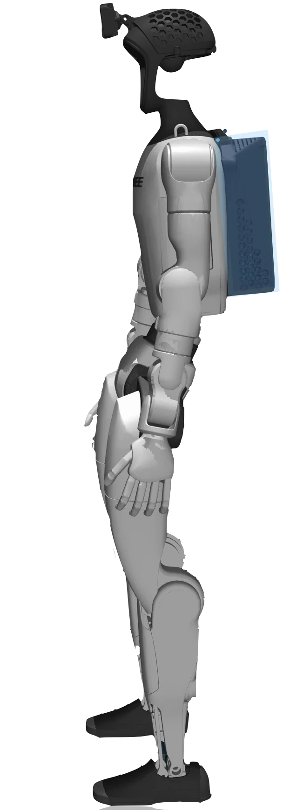
Loading G1
3D viewer unavailable
3D viewer needs JavaScript
Unitree G1 · MuJoCo Menagerie
Loading the recorded run
How the models are trained
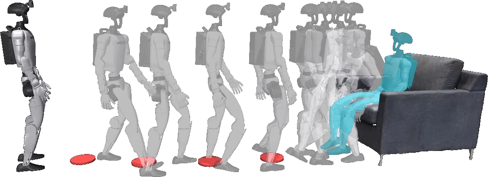
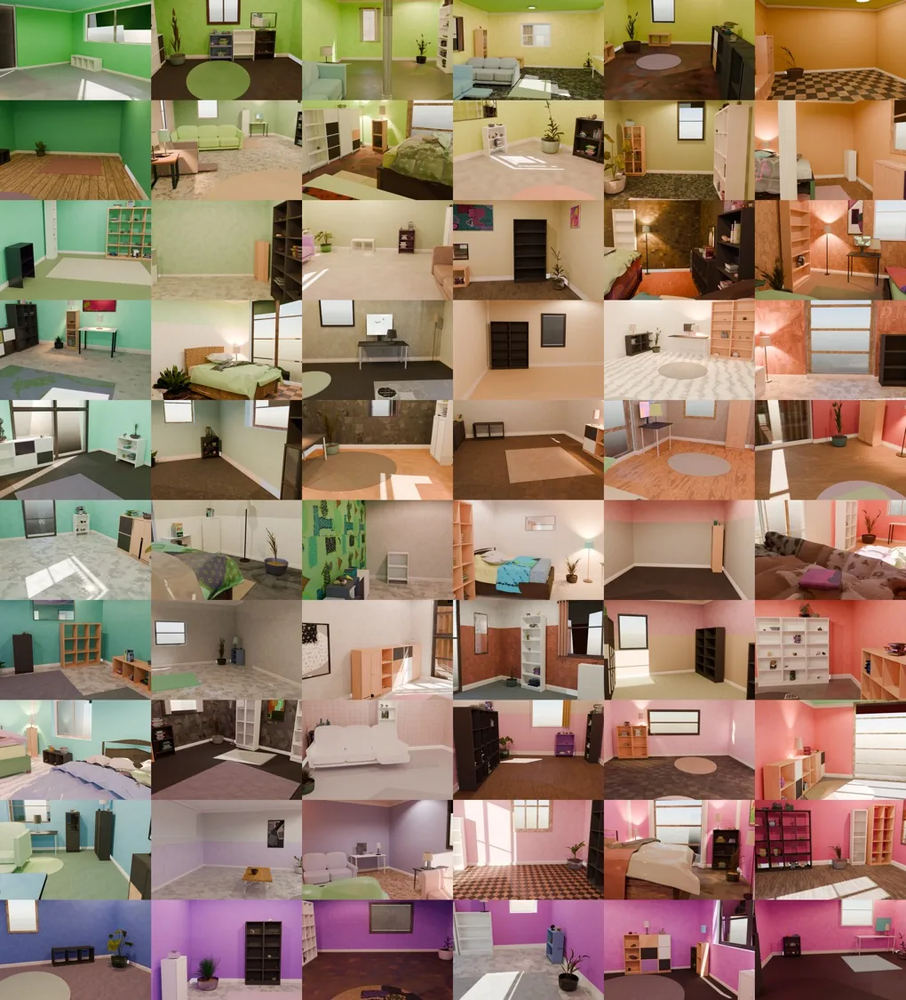
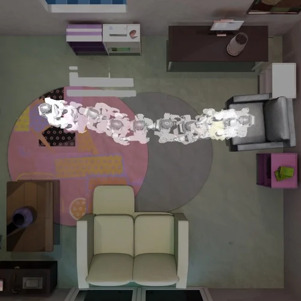
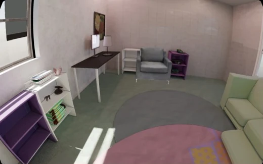
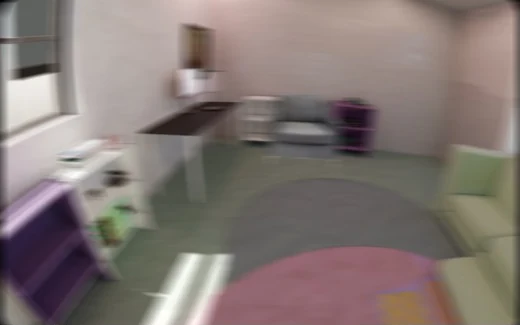
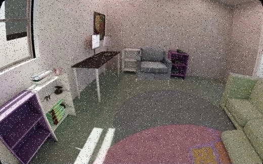
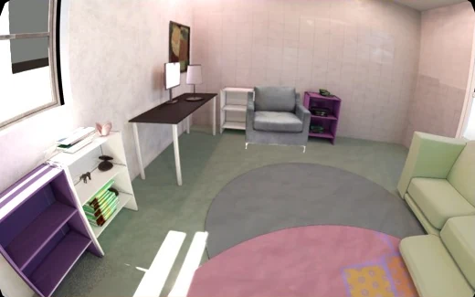
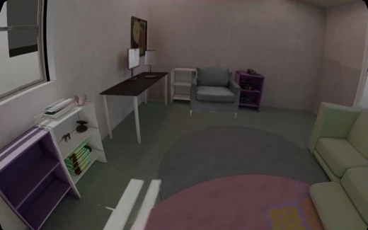
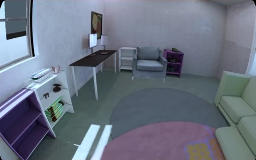
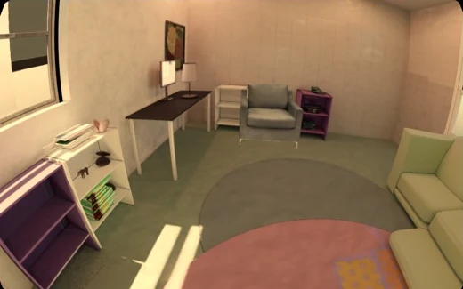
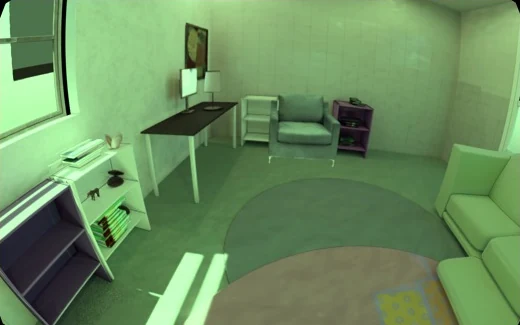
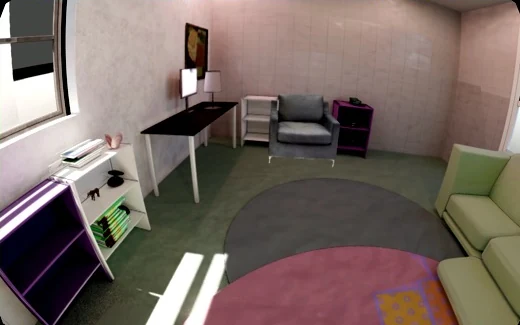
Data
250 H100
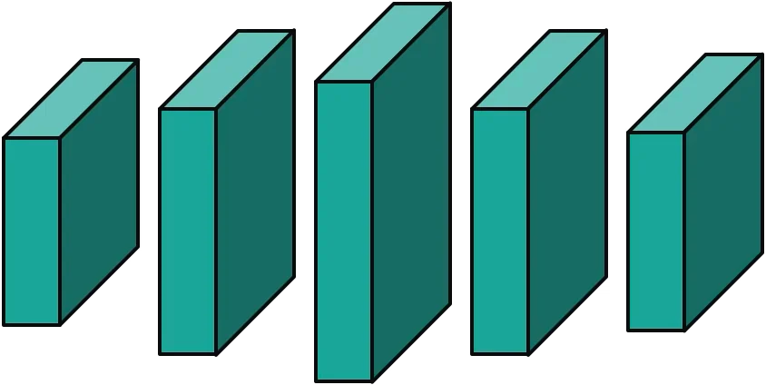
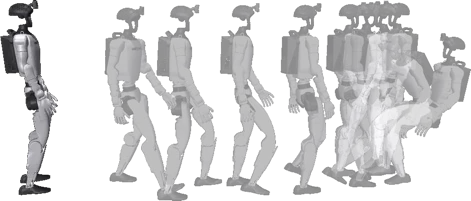
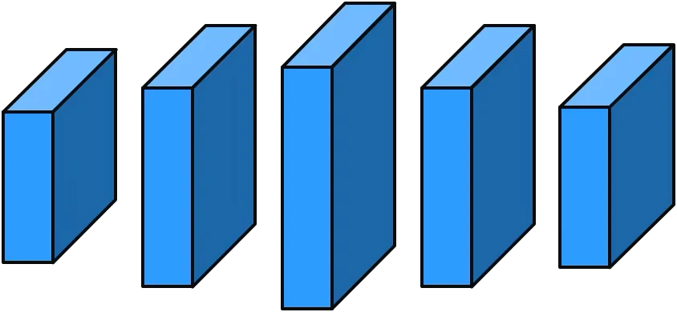
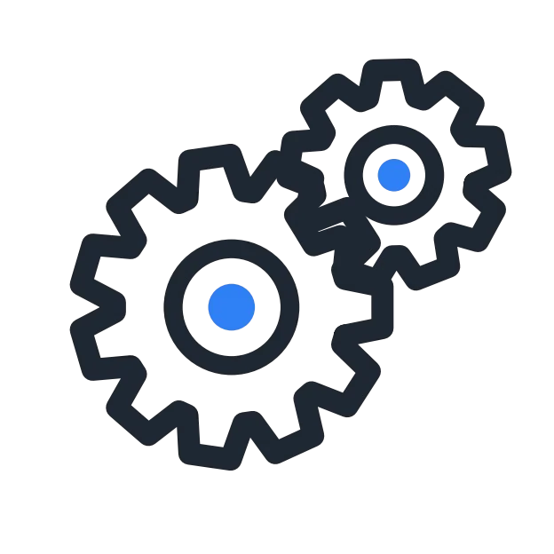
- A, Kinematic motion generation: the task “sit on the armchair” splits into walk forward, turn around and sit on chair; Kimodo generates each segment from a text prompt, optional waypoints and a terminal keyframe; 33 geometric checks keep the best of N candidates.
- B, Scenario staging: Infinigen generates 1,000 homes; the motion is placed by sampling SE(2) poses and keeping the first collision-free one. An episode is a seed plus a placement record.
- C, Egocentric camera rendering: a hardware-matched fisheye camera; the original render and eight visual randomizations: motion blur, salt and pepper, bright light, low light, cool tone, warm tone, green tint, high contrast.
- D, Training motion generator and tracker with synthetic data: paired video, language and motion from 1,000 homes; imitation learning trains the motion generator on 64 B200, reinforcement learning the motion tracker on 4 H100. The corpus is generated on 250 H100.
Hardware System
Video
Cite
BibTeX
@article{halo2026,
title = {Perceptive Humanoid Motion from Simulation},
author = {Hu, Siyuan and Abuduweili, Abulikemu and Meng, Yue and Liu, Shipeng and Leboutet, Quentin and
Chen, Chen and M{\"u}ller, Matthias and Koltun, Vladlen},
journal = {arXiv preprint},
year = {2026}
}